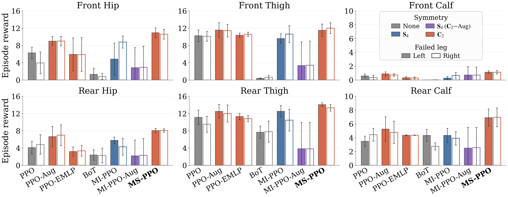

Beyond Topology: A Morphological Symmetry Graph Representation for Locomotion Policy Learning
Abstract
Reinforcement learning has enabled impressive locomotion skills on articulated robots, but common policy representations remain only weakly aligned with robot physics. Generic networks ignore kinematic structure, while graph-based policies encode connectivity without specifying how physical quantities transform across symmetric body parts. We introduce a morphological symmetry graph representation for locomotion policy learning, instantiated as MS-PPO with PPO on Go2 and MS-SAC with FastSAC on G1. Starting from the robot's topological graph, our representation explicitly incorporates the permutations and sign changes induced by morphological symmetry on observations and actions, yielding a graph actor with an equivariant action mean and an invariant critic. We evaluate the representation on Unitree Go2 command tracking and asymmetric joint-failure tasks, and on Unitree G1 29-DoF whole-body locomotion, including zero-shot sim-to-real deployment. Our approach achieves the lowest tracking errors in both simulation and hardware, and the highest mean simulation returns across all three joint-failure types on Go2 among the evaluated baselines. On Go2, MS-PPO uses only 34.6% of the parameters of the PPO baseline. These results support the effectiveness of jointly encoding topology and morphological symmetry across robot embodiments and learning frameworks.
Quadrupedal Figure-8 Walking (Unitree Go2)
The robot follows velocity commands derived from $x(t)=2\sin(2\pi t/20)$ and $y(t)=\sin(4\pi t/20)$, alternating left and right turns. The reference has a 20-second period and a 4 m × 2 m peak-to-peak envelope. Simulation covers one period; hardware evaluation covers three consecutive periods (60 s). MS-PPO achieves the lowest mean linear and angular tracking errors in both simulation and hardware, with 732,046 parameters—34.6% of the PPO baseline.
We compare seven methods: PPO (MLP), PPO-Aug (mirrored augmentation), PPO-EMLP (equivariant MLP), BoT (four-layer Body Transformer), MI-PPO (morphology-informed GNN), MI-PPO-Aug (GNN with mirrored augmentation), and MS-PPO (ours).
| Method | Eligible seeds | Linear TE (m/s) ↓ | Angular TE (rad/s) ↓ | Return ↑ |
|---|---|---|---|---|
| PPO | 5/5 | 0.084 ± 0.015 | 0.150 ± 0.007 | 13.295 ± 1.946 |
| PPO-Aug | 5/5 | 0.077 ± 0.020 | 0.146 ± 0.014 | 14.464 ± 0.483 |
| PPO-EMLP | 2/5 | 0.086 ± 0.006 | 0.130 ± 0.008 | 14.206 ± 0.179 |
| BoT | 5/5 | 0.170 ± 0.029 | 0.200 ± 0.030 | 11.910 ± 0.670 |
| MI-PPO | 5/5 | 0.089 ± 0.014 | 0.165 ± 0.007 | 14.442 ± 0.341 |
| MI-PPO-Aug | 4/5 | 0.293 ± 0.170 | 0.603 ± 0.266 | 6.945 ± 5.135 |
| MS-PPO | 5/5 | 0.061 ± 0.014 | 0.101 ± 0.011 | 14.679 ± 1.736 |
Simulation metrics use eligible seeds: 2/5 for PPO-EMLP, 4/5 for MI-PPO-Aug, and 5/5 for each other method. Eligibility requires valid tracking samples after the 50-step warm-up in the no-fault Figure-8 test; the same eligible checkpoints are used for both Go2 tasks. Values are mean ± population standard deviation across eligible seeds. Tracking errors exclude warm-up; returns include it.
Hardware tracking results
| Method | Linear TE (m/s) ↓ | Angular TE (rad/s) ↓ |
|---|---|---|
| PPO | 0.222 ± 0.116 | 0.332 ± 0.240 |
| PPO-Aug | 0.217 ± 0.102 | 0.266 ± 0.146 |
| PPO-EMLP | 0.301 ± 0.143 | 0.291 ± 0.182 |
| BoT | 0.273 ± 0.141 | 0.333 ± 0.225 |
| MI-PPO | 0.239 ± 0.122 | 0.308 ± 0.177 |
| MI-PPO-Aug | 0.256 ± 0.115 | 0.243 ± 0.167 |
| MS-PPO | 0.211 ± 0.112 | 0.220 ± 0.125 |
Mean ± standard deviation over the recorded three-cycle evaluation. Linear tracking error is the mean Euclidean norm of planar velocity error; angular tracking error is the mean absolute yaw-rate error.
Symmetry Generalization — Walk to One Side (Unitree Go2)
In this separate experiment, policies learn with $c_x\in[-1,1]$ m/s, $c_y\in[0,0.6]$ m/s, and $c_\omega\in[0,1]$ rad/s. Mirrored test commands reverse lateral velocity and yaw rate while preserving forward velocity. MS-PPO maintains comparable tracking errors on trained and unseen commands for both trot and pronk gaits. The hardware recordings below compare left turns (trained direction) with right turns (unseen direction), without retraining. This experiment compares PPO, PPO-EMLP, MI-PPO, and MS-PPO.
*The symmetry-generalization experiment uses a reduced-command PPO-EMLP variant trained with $c_x=0$ m/s, as described in the supplementary experiment.
Joint Failure Tolerance (Unitree Go2)
The robot is commanded to walk forward at 1 m/s with the rear-right calf joint disabled on hardware. All methods share the same training mixture: 70% nominal episodes and 30% single-joint-failure episodes, with the failed joint sampled uniformly from all 12 joints. The policy receives 30 frames of observations and previous actions (about 0.6 s), without the fault identity. MS-PPO achieves the highest mean simulation return for all three failure types: hip, thigh, and calf.
On hardware, two trials are recorded per method; the longer-surviving trial is used for visualization and quantitative evaluation. In these selected trials, MS-PPO reduces linear and angular tracking errors by 25.4% and 49.4%, respectively, relative to the strongest baseline for each metric.
All 12 single-joint failures are evaluated for up to 1,000 steps, with 100 parallel environments per seed and fault condition.

| Method | Hip return ↑ | Thigh return ↑ | Calf return ↑ |
|---|---|---|---|
| PPO | 4.797 ± 2.158 | 10.244 ± 1.634 | 2.217 ± 1.884 |
| PPO-Aug | 7.913 ± 2.150 | 11.869 ± 1.741 | 2.907 ± 2.428 |
| PPO-EMLP | 4.599 ± 3.134 | 10.763 ± 0.703 | 2.332 ± 2.024 |
| BoT | 0.738 ± 1.040 | 1.827 ± 2.071 | 1.048 ± 1.030 |
| MI-PPO | 5.929 ± 2.821 | 10.802 ± 2.087 | 2.291 ± 1.984 |
| MI-PPO-Aug | 2.578 ± 4.311 | 3.597 ± 5.835 | 1.627 ± 2.421 |
| MS-PPO | 9.418 ± 1.606 | 12.719 ± 1.456 | 4.023 ± 3.045 |
Simulation metrics use eligible seeds: 2/5 for PPO-EMLP, 4/5 for MI-PPO-Aug, and 5/5 for each other method. Eligibility requires valid tracking samples after the 50-step warm-up in the no-fault Figure-8 test; the same eligible checkpoints are used for both Go2 tasks. Returns are summarized as mean ± population standard deviation across eligible seed-leg pairs for each joint type.
Hardware tracking results
| Method | Linear TE (m/s) ↓ | Angular TE (rad/s) ↓ |
|---|---|---|
| PPO | 1.203 ± 0.247 | 0.486 ± 0.378 |
| PPO-Aug | 1.209 ± 0.183 | 0.892 ± 0.927 |
| PPO-EMLP | 1.673 ± 1.810 | 0.714 ± 0.553 |
| BoT | 1.241 ± 0.222 | 0.900 ± 0.473 |
| MI-PPO | 0.825 ± 0.287 | 0.580 ± 0.550 |
| MI-PPO-Aug | 0.543 ± 0.337 | 0.538 ± 0.473 |
| MS-PPO | 0.405 ± 0.263 | 0.246 ± 0.216 |
Mean ± standard deviation within the selected longer-surviving trial. Linear tracking error is the mean Euclidean norm of planar velocity error; angular tracking error is the mean absolute yaw-rate error.
Dual-Robot Collaboration under Joint Failure (Unitree Go2)
Two Go2 robots are connected in a lead-follower configuration. The lead robot tracks a 1 m/s forward command with its rear-right calf joint disabled, while interaction with the rear robot introduces additional dragging and perturbations. MS-PPO maintains stable locomotion in the recorded sequence despite the combined actuator failure and interaction disturbances. These recordings provide a qualitative comparison across all seven methods.
Humanoid Whole-Body Locomotion (Unitree G1)
All seven methods are trained with FastSAC in Holosoma on the same 29-DoF whole-body task: 12 leg joints, 3 waist joints, and 14 arm joints. Our representation is instantiated as MS-SAC, using an equivariant graph actor and an invariant critic. Deterministic policies transfer to the physical G1 without fine-tuning, tracking a 0.7 m/s forward command.
MS-SAC achieves the highest mean simulation reward and the lowest mean linear and angular tracking errors in simulation and on hardware. Across three hardware trials per method, its linear tracking error is 0.146 ± 0.009 m/s, approximately 14% lower than SAC-EMLP; angular tracking error is 0.139 ± 0.007 rad/s.
Hardware tracking results
| Method | Linear TE (m/s) ↓ | Angular TE (rad/s) ↓ |
|---|---|---|
| SAC | 0.185 ± 0.019 | 0.158 ± 0.011 |
| SAC-Aug | 0.191 ± 0.005 | 0.188 ± 0.017 |
| SAC-EMLP | 0.170 ± 0.004 | 0.140 ± 0.024 |
| SAC-BoT | 0.289 ± 0.015 | 0.154 ± 0.034 |
| MI-SAC | 0.215 ± 0.017 | 0.258 ± 0.061 |
| MI-SAC-Aug | 0.188 ± 0.017 | 0.222 ± 0.033 |
| MS-SAC | 0.146 ± 0.009 | 0.139 ± 0.007 |
Mean ± standard deviation across three trials per method. Planar base velocity is reconstructed offline from foot kinematics and IMU data under a stance-foot assumption; yaw rate comes directly from the IMU gyroscope.